Probabilistic Diffusion Model¶
Probabilistic Diffusion Model概率扩散模型理论与完整PyTorch代码详细解读
参考文献：
（1）2015年 ： 基于非平衡热力学进行深度无监督学习
深度无监督学习就是生成照片

（2）2020年：去噪概率模型
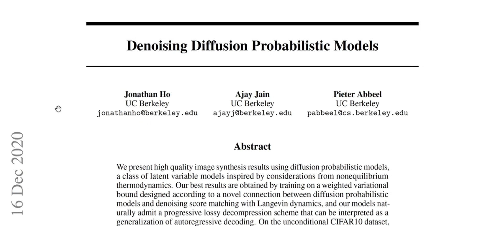
- 扩散模型开始流行实行2020年的这篇论文，2021年、2022年开始有大量论文出现
-
目前：DDPM 2020年这篇论文的引用量已经220万，2015年论文的引用量也有200多万
-
扩散模型是一种生成式模型：GAN的任务、VAE的任务、FLOW的任务都可以用Diffusion Model
1 汇总生成模型¶
（1）第一类生成模型：Seq2Seq模型，自回归的解码模型
（2）第二类生成模型：基于GAN的模型，没有显式的对目标分布进行建模，只是将生成的数据放到下游的判别器中，以对抗的方式使得生成器达到理想的目标分布
（3）第三类生成模型：FLOW模型：FLOW模型的数学原理比较严谨，是一个完全可逆的过程，为了让FLOW模型变得可解，需要设计一些巧妙结构，使得对数似然完全可解，也是因为设计的巧妙的结构，限制了FLOW的性能
（4）第四类生成模型：VAE
（5）第五类生成模型：Diffusion：其中VAE和Diffusion模型其实有点像

2 前置数学知识¶

一、条件概率公式与高斯分布的KL散度¶
1、条件概率的一般公式
-
（1）P(A,B,C)=P(A)P(B|A)P(C|A,B)
-
（2）P(B,C|A) = P(B|A)P(C|A,B)
2、基于马尔科夫假设的条件概率
什么叫 马尔科夫假设？
当前时刻的输出 只与 上一时刻有关，跟过去以及更远的无关
如我们现在有马尔科夫链：A→B→C，则上面的（1）、（2）可以进行简化：
P(A,B,C)可以写成：P(A,B)P(C|A,B) 继续写成：P(A)P(B|A)P(C|A,B)
因为 A是B的上一时刻，所以保留 P(B|A)
因为A距离C比较远，不再是C的上一时刻，所以 P(C|A,B)写成P(C|B)
所以在满足马尔科夫假设的情况下，条件概率写成：
- （3）P(A,B,C)=P(A)P(B|A)P(C|B)
同理简化P(B,C|A)，得到：
- （4）P(B,C|A) = P(B|A)P(C|B)
3、两个高斯分布的KL散度公式
明白VAE的话，KL散度公式会很清楚
对于两个单一变量的高斯分布p和q来说，均值是 \(\mu_1\) 和 \(\mu_2\) ，方差是 \(\sigma_1^2\)、\(\sigma_2^2\)
则它们的KL散度公式：
\(KL(p,q)=log\frac{\sigma_2}{\sigma_1} + \frac{\sigma^2+(\mu_1-\mu_2)^2}{2\sigma^2_2}-\frac{1}{2}\)

4、参数重整化的技巧
什么是参数重整化？
假设希望从 均值为 \(\mu\)、方差为 \(\sigma^2\) 的高斯分布 \(N(\mu,\sigma^2)\) 中采样，如果直接采样的话，会造成什么问题呢？
如果 \(\mu\) 和 \(\sigma\) 是通过神经网络预测出来的话，直接去采样\(N(\mu,\sigma)\)，就会导致与 \(\mu\) 和\(\sigma\) 参数断开了，梯度无法传回去了，因为采样的过程是不可导的；所以为了让采样出来的样本跟 \(\mu\) 和 \(\sigma\) 之间，仍然可以梯度可传播的，仍然是可导的，我们就可以把这个采样过程 等价于 首先从 \(N(0,1)\) 的标准分布中，采样出 z，把 z 当成是一个常数，再把z乘以原来分布的 \(\sigma\) 和 \(\mu\) ，保证了梯度可以回传
这样做的好处是，这样的采样过程转移到了 z上， z可以看做是 网络的输入 ，或者当成一个常数，采样值 \(y=\sigma z+\mu\)，\(y\)与 \(\sigma\) 和 \(y\)与 \(\mu\) 之间是完全可导的
如果不这样做的话，\(y\)对\(\mu\) 和 \(y\)对 \(\sigma\) 的导数是算不出来的
以上称为参数重整化
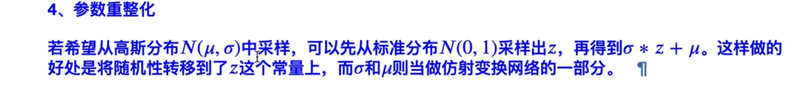
目的就是希望 采样出来的值，跟 \(\mu\) 和 \(\sigma\) 之间 梯度是可导的
这就是参数重整化的技巧，这个技巧在VAE和Diffusion中大量使用
以上是回顾，接下来讲解什么是VAE以及多层VAE
二、VAE与多层VAE回顾¶
1 单层VAE&置信下界¶
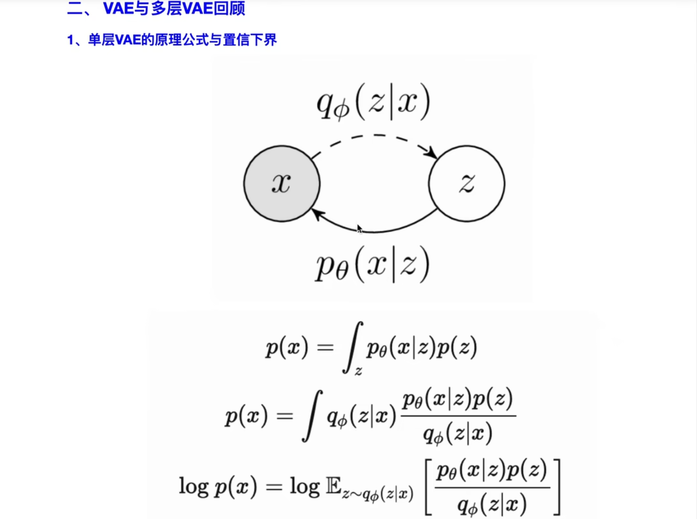

VAE的原理：
首先单层VAE
VAE认为x由某一个隐变量z生成
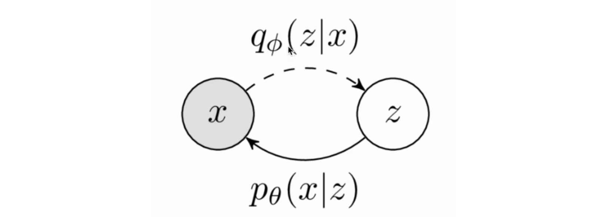
隐变量z如何得到呢？
在训练的时候，通过\(q_{\phi}(z|x)\) 从x中生成z，在推理的时候，从z预测x
以上就是单层VAE
公式：
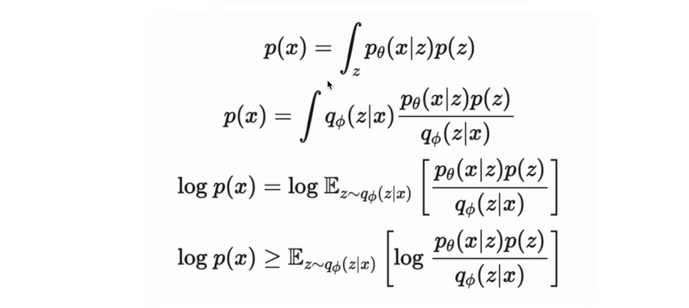
用公式 概括目标数据分布：
（1）p(x)可以写成联合概率分布，对z这个变量进行积分，得到边缘分布：
\(p(x) = \int_zp_{\theta}(x|z)p(z)\)
写成一个 \(条件概率\) 和 \(p(z)\) 相乘的形式
（2）对（1）乘以后验概率分布的形式，后验是希望从x去预测z这个隐变量，上下分别乘以 $q_{\phi} $ z given x 就是\(q_{\phi}(z|x)\) ：
\(p(x)= \int q_{\phi}(z|x) \frac{p_{\theta}(x|z)p(z)}{q_{\phi}(z|x)}\)
这个式子相当于 \(\frac{p_{\theta}(x|z)p(z)}{q_{\phi}(z|x)}\) 在 \(q_{\phi}\) 分布下的期望
（3）对（2）左右两边同时取\(log\)，得到\(logp(x)\)
右边写成期望的形式：
\(logp(x)\) 就是一个对数似然
\(logp(x) = log \mathbb{E}_{z \sim q_{\phi}(z|x)}[\frac{p_{\theta}(x|z)p(z)}{q_{\phi(z|x)}}]\)
（4）根据詹森不等式，log移到期望里面，得到：
\(logp(x) \ge \mathbb{E}_{z \sim q_{\phi}(z|x)}[log \frac{p_{\theta}(x|z)p(z)}{q_{\phi(z|x)}}]\)
经过以上的推导，得到目标数据分布的下界，训练网络的目的是最大化 \(logp(x)\)，最大化对数似然，最大化 \(logp(x)\) 不好求，就可以 最大化 \(\mathbb{E}_{z \sim q_{\phi}(z|x)}[log \frac{p_{\theta}(x|z)p(z)}{q_{\phi(z|x)}}]\)
因为 \(logp(x) \ge \mathbb{E}_{z \sim q_{\phi}(z|x)}[log \frac{p_{\theta}(x|z)p(z)}{q_{\phi(z|x)}}]\) 这个不等式永远成立
接下来，思考，怎么最大化 \(\mathbb{E}_{z \sim q_{\phi}(z|x)}[log \frac{p_{\theta}(x|z)p(z)}{q_{\phi(z|x)}}]\) ？
看成两部分
第一部分：\(log p_{\theta}(x|z)\)
看成是预测网络，基于预测出来的隐变量z预测x，这一部分好求，与目标数据的分布作差即可
第二部分：\(log\frac{p(z)}{q_{\phi}(z|x)}\)
这部分分子、分母求倒数，变成\(-log\frac{q_{\phi}(z|x)}{p(z)}\)
又 因为在 \(q_{\phi}\) 分布下的期望 \(\mathbb{E}_{z \sim q_{\phi}(z|x)}\) ，所以这个式子变成 \(q_{\phi}\) 与 \(p_z\) 之间的KL散度
于是下界变成：
\(\mathbb{E}_{z \sim q_{\phi}(z|x)}[log \frac{p_{\theta}(x|z)p(z)}{q_{\phi(z|x)}}]\)
\(= log p_{\theta}(x|z) - KL散度(q_{\phi} 与 p)\)
\(p\) 一般情况下可以假设服从高斯分布
因此，\(q_{\phi}\) 可以预测高斯分布
由于两个高斯分布之间的KL散度是可解的，所以整个VAE的目标函数，也是可以写出来的，以上是单层VAE的原理
接下来，多层VAE
2 多层VAE及置信下界¶


多层VAE
假设这里的x 不是由一个隐变量 生成的，而是由 2个生成

一开始的隐变量称为 \(z_2\) ，通过 \(z_2\) 生成 \(z_1\)，再通过 \(z_1\) 生成 \(x\)
这样的生成过程叫做多层VAE
(1)此时的目标分布 \(p(x)\) ，可以写成一个联合概率分布，然后把 \(z_1\) 、\(z_2\) 积掉，得到 \(p(x)\)：
\(p(x) = \int_{z_1}\int_{z_2}p_{\theta}(x,z_1,z_2)dz_1dz_2\)
(2)分子分母 同时乘以 后验分布：
\(p(x) = \int_{z_1}\int_{z_2}q_{\phi}(z_1,z_2|x)\frac{p_{\theta}(x,z_1,z_2)}{q_{\phi}(z_1,z_2|x)}dz_1dz_2\)
(3)继续将(2)写成期望的形式：\(p(x) = \mathbb{E}_{z_1,z_2\sim q_{\phi}(z_1,z_2|x)}[\frac{p_{\theta}(x,z_1,z_2)}{q_{\phi}(z_1,z_2|x)}]\)
(4) 同样对(3)两边取一个对数，利用詹森不等式，得到\(log(p(x))\) 的下界：
(5)对(4)，借助之前说过的公式，在马尔科夫假设的条件下，可以写成：

(6)将(5)代入(4)，得到

以上是多层VAE的目标函数

训练的时候，有两次 首先从 \(x\)中推理出\(z\)，然后从\(z\)中，推理出\(x\)
这个过程跟Diffusion很像
三、Diffusion图示¶
（1）

（2）讲解了Diffusion是怎么一回事

Diffusion从目标分布 \(x_0\) 中加噪，去生成，得到最终的一个分布 \(x_T\) ，用的时候从最终分布 \(x_T\) ，逐步逐步的得到目标分布 \(x_0\)
所以Diffusion的目标函数跟多层VAE的目标函数是很像的
思考，多层VAE & Diffusion之间有什么关联？
Diffusion分为两个过程
符号说明：目标分布（记为 \(x_0\)），噪声分布 \(x_T\)
第一个过程：扩散过程
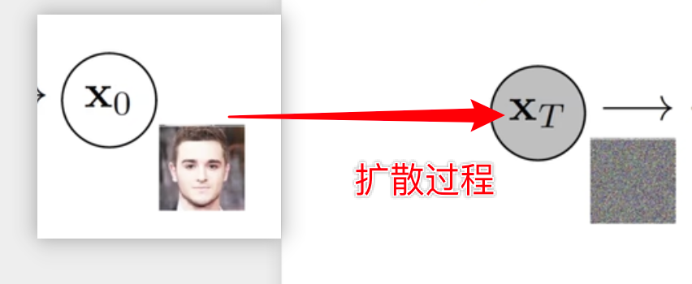
- 从 \(x_0\) 到 \(x_T\) 熵增过程，从有序到无序
- 想象 把一个水滴 倒入到 一个池塘或者河流之中，慢慢的扩散，最后没有了原来的分布
- 扩散过程 就是原始的过程中 不断的加噪，直到最后变成了 各项独立的高斯分布
生成的时候，是希望从一个噪声分布中，逐步预测出目标分布，这个过程叫做 逆扩散过程
第二个过程：逆扩散过程
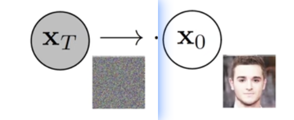
逆扩散过程，就是基于一个噪声，能够把目标分布推导出来，从目标分布中，采样新的样本，生成新的图像
DIffusion要做的就是，有一堆目标分布（比如有一堆这个人的照片），我们希望能够把逆扩散过程，也就是从\(x_T\) 到 \(x_0\) 的原理搞出来，或者说公式预测出来，然后随机的生成噪声分布，从而能够预测出新的这个人的照片，以上就是Diffusion Model做的事情
补充两个条件概率分布：

- \(p_{\theta}(x_{t-1}|x_t)\) ： 表示逆扩散过程中的条件概率分布
- \(q(x_t|x_{t-1})\) ：表示扩散过程中的条件概率分布
而我们在进行推理的时候，只用到逆扩散过程
接下来用图表示这个过程：
（3）

t=0时，就是标准的目标分布，就是规则的图形，接着我们逐步的加噪，加到一半的时候，发现图形变得很模糊，加到最终的时候，分布已经完全失去了原貌，基本已经变成了各项独立的高斯分布：

逆扩散的过程也是同样，一开始的时候，生成一堆高斯分布的噪声，然后基于模型不断的迭代，迭代到t=0的时候，也就是 T时刻的迭代，生成新的样本，新的样本的分布跟原来数据是一样的，从同一个分布中，采样出来的新的样本，以上是逆扩散过程：

扩散过程和逆扩散过程的差称为漂移量：

以上是扩散模型的大致过程
以上是图示，下面是正式的推导过程
四、扩散过程¶


首先明白，扩散过程分为两个过程：
(1)正向的扩散过程，从 \(x_0\) 到 \(x_T\)
(2)反向的逆扩散过程，从 \(x_T\) 到 \(x_0\)（也可以叫重建过程） 从噪声中 重建目标分布
1、首先看扩散过程：给定初始数据分布，通俗一点就是训练集服从分布 \(x_0 \sim q(x)\)，接着不断的向分布中添加噪声，这里的均值和标准差都是不含参数的，再次强调，扩散过程的正向过程是不含参数的，就是往 \(x_0\) 中 添加高斯噪声的时候，每一步的均值的方差都是确定的，就比如学习率，虽然每一步都在变化，但是是确定的，而不是网络预测的，并且这个过程也是马尔科夫链的过程，即当前时刻只与上一时刻相关，与过去更远的时刻无关，这就是第一点，不断的往原始分布中，去添加高斯噪声，但这个添加不是简单的加法，而是仿射变换的过程，等下会基于参数重整化生成每一时刻新的数据分布
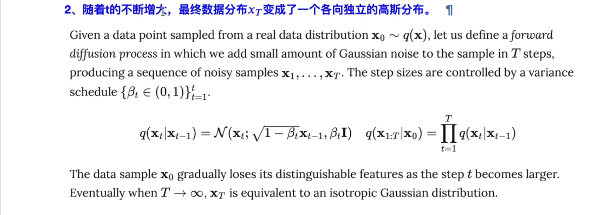
2、第二点，随着 t的不断增大，我们最终的数据分布会变成 各项独立的高斯分布，为什么会这样？下面开始推导：
在扩散模型中，有定义 \(q(x_t|x_{t-1})\)：从 \(x_0\) 去预测 \(x_1\) ，或者说 \(x_1\) 预测 \(x_2\) 的话，是一个条件概率分布，并且这个条件概率分布是一个高斯分布，这个高斯分布的均值是 \(\sqrt{1-\beta_t}x_{t-1}\)，方差是 \(\beta_tI\) ，也就是说 每次加噪的高斯分布，只由当前时刻的 \(x\) 和一个确定值 \(\beta_t\) 有关，是完全不含可训练参数的，以上就是扩散过程，是不含参的，也就是说 按照公式：

迭代的话，可以计算 t=任意时刻的，\(x_t\) 的分布，然后就可以采样出值
还有一个迭代式，给定 \(x_0\) 求出 \(x_{1:T}\) 的联合分布，就是多个条件概率相乘的结果，是一个 马尔科夫过程，以上是一个联合分布
问题：怎么算出 \(x_t\) 呢？
答：用之前参数重整化的技巧，因为\(x_t\)服从的分布有：\(x_t|x_{t-1} \sim \mathcal{N}(\sqrt{1-\beta_t}x_{t-1},\beta_tI)\)，可以从一个正态分布中 生成一个 z，然后把 z乘以 根号下 \(\beta_t\)，再加上 \(\sqrt{1-\beta_t}x_{t-1}\)：
\(\sigma z + \mu = \sqrt{\beta_t}z+\sqrt{1-\beta_t}x_{t-1}\)，
这就是 \(x_t\) 的一个采样值，经过不断的迭代，得到 \(x_{t+1}\) 的采样值，最终得到 \(x_T\) 的采样值
问题：大T是怎样确定的，以及 \(\beta_t\) 怎么设置？
答： \(\beta_t\) 在原论文中是 出于 \(0\sim 1\)之间的小数，并且随着时间的推移，\(\beta_t\) 是越来越大的
也就是 \(\beta_1 < \beta_2<...<\beta_T\) 把 \(\beta_t\) 设置成就像学习率一样设置成不断变化的，不过学习率是不断降低的，这里的 \(\beta_t\) 是在不断变大的
以上通过迭代的方法计算 \(x_t\) 的采样值
接下来 说明 当 \(T=什么\) 的时候，\(x_T\) 接近于一个各项独立的高斯分布

任意时刻的 \(q(x_t)\) ，可以不用 完全一样的 基于上面的公式，每一步的采样迭代出来：

而是可以完全的基于 \(x_0\) 和 \(\beta_t\) 计算出来，也就是给出 \(x_0\) 初始的数据分布和 \(\beta_t\) 一个变换值，就可以算出任意时刻的 \(q(x_t)\) ，就不用一步步迭代了
具体的计算步骤：
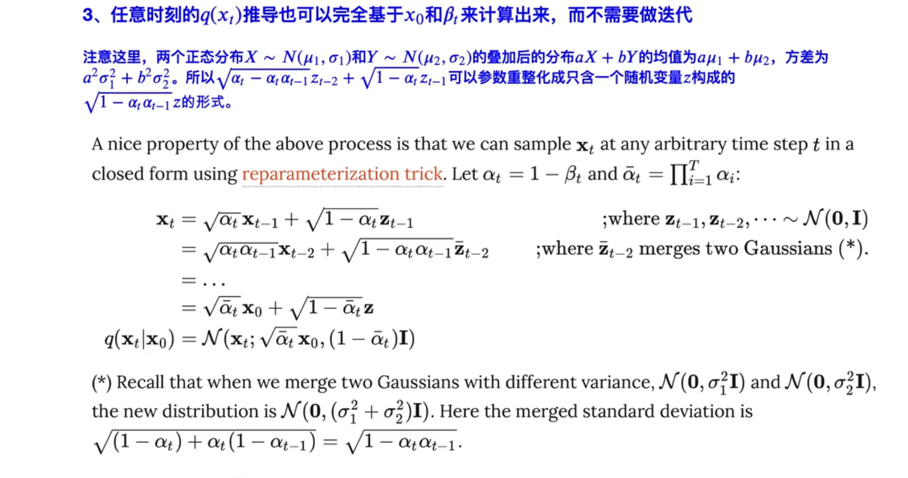
（1） \(x_t = \sqrt{\alpha_t}x_{t-1}+\sqrt{1-\alpha_t}z_{t-1}\)
首先，\(x_t\) 用参数重整化的技巧 写成 \(\sqrt{\alpha_t}x_{t-1}+标准差\)
\(\sigma z + \mu = \sqrt{\beta_t}z+\sqrt{1-\beta_t}x_{t-1}\)
这里的 \(\alpha_t = 1-\beta_t\)
可以看到原文都写了
也就是 \(x_t = \sqrt{\alpha_t}x_{t-1}+\sqrt{1-\alpha_t}z_{t-1}\)
均值 + 标准差 × 随机生成的正态分布的量
以上就是 参数重整化技巧
\(z_t\) 是从 \(N(0,1)\) 中采样出来的 随机值
（2）

\(x_t = \sqrt{\alpha_t}x_{t-1}+\sqrt{1-\alpha_t}z_{t-1}\)
$=\sqrt{\alpha_t}(\sqrt{\alpha_{t-1}}x_{t-2}+\sqrt{1-\alpha_{t-1}}z_{t-2})+\sqrt{1-\alpha_t}z_{t-1} $
$=\sqrt{\alpha_t\alpha_{t-1}}x_{t-2}+\sqrt{\alpha_t}\sqrt{1-\alpha_{t-1}}z_{t-2}+\sqrt{1-\alpha_t}z_{t-1} $
\(\sqrt{\alpha_t}\sqrt{1-\alpha_{t-1}}z_{t-2}+\sqrt{1-\alpha_t}z_{t-1}\)
可以参数重整化为 只包含一个 随机变量z的形式，理由：
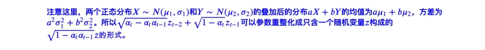
若给出 \(X \sim N(\mu_1,\sigma_1)\) \(Y\sim N(\mu_2,\sigma_2)\)
则 \(aX+bY \sim N(a\mu_1+b\mu_2,a^2\sigma_1^2+b^2\sigma_2^2)\)
所以
\(\sqrt{\alpha_t}\sqrt{1-\alpha_{t-1}}z_{t-2}+\sqrt{1-\alpha_t}z_{t-1} \sim N(0,\alpha_t-\alpha_t\alpha_{t-1}+1-\alpha_t)=N(0,1-\alpha_{t-1}\alpha_t)\)
（\(z_{t-1}、z_{t-2} \sim N(0,1)\)）
所以
\(\sqrt{\alpha_t}\sqrt{1-\alpha_{t-1}}z_{t-2}+\sqrt{1-\alpha_t}z_{t-1}\) 可以重整化为 \(\sqrt{1-\alpha_t\alpha_{t-1}}\bar z_{t-2}\)
以上推出 第二步
（3）
一次类推，得到
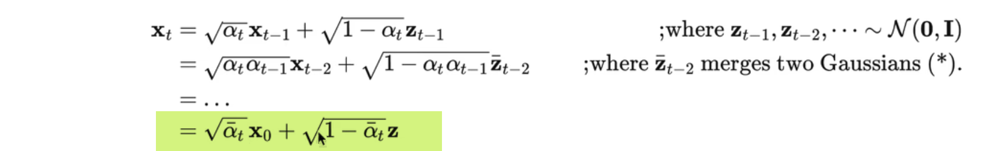
- z仍然是 N(0,1) 中采样出来的
- \(x_t = \sqrt{\bar{\alpha_t}}x_0 + \sqrt{1-\bar\alpha_t}z\)
- \(\bar \alpha_t\) 表示连乘
- \(\bar{z_{t-2}}\) 表示 融合两个高斯分布

（4）

由公式可知，当给定 \(x_0\) 的时候，\(q(x_t|x_0)\) 的分布其实就是 以 \(\sqrt {\bar\alpha_t} x_0\) 为均值，以 \(\sqrt{1-\bar \alpha_t }\)为方差的高斯分布，这也就是说 在给定 \(x_0\) 和 \(\beta_t\) 的条件下，可以求出 \(q(x_t|x_0)\)
（前面我们假设了 \(\alpha_t = 1-\beta_t\)，所以 \(\beta_t\) 已经 就相当于 \(\alpha_t\)已知，自然的 \(\bar \alpha_t\) 已知）
\(q(x_t|x_0)=\mathcal{N}(x_t;\sqrt{\bar \alpha_t}x_0,(1-\bar \alpha_t)I)\)
也就是 可以以 \(\mathcal{N}(x_t;\sqrt{\bar \alpha_t}x_0,(1-\bar \alpha_t)I)\) 这个高斯分布进行采样，而不需要逐步迭代
✅
✅
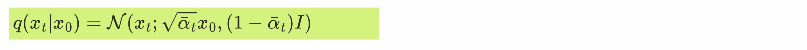
两种 采样方法
以上就可以确定，T，也就是当加多少步噪声的时候，我们的 \(q(x_t|x_0)\) 真的变成一个各项 同性 的 高斯分布了（等价于 各项独立），因为 \(\alpha_t\) 是已知的，是我们自己设置的 类似 学习率的常数，因此就能算出来 当 \(t=多少\)的时候， \(\sqrt{\bar \alpha_t}\) 接近于0，\((1-\bar \alpha_t)\) 接近于1，此时 \(q(x_t|x_0)\) 就接近于 标准正态分布。以上说明了如何确定 t在什么时候，能够使得 \(q(x_t|x_0)\) 接近于 \(N(0,1)\)
小小的总结一下：
(1) 扩散过程是一个完全不含参的扩散过程
(2) 迭代次数 以及 \(q(x_t)\) 的计算
只要给定初始分布，任意时刻的 \(q(x_t)\) 都可以把采样值 算出来
其中 计算 q(x_t) 不一定是 通过迭代：

也可以通过直接的计算出来：

这个式子使用的时候需要 预先的知道 \(\alpha_t\) 也就是 \(\beta_t\)
(3)与VAE的区别：
第一点：
VAE从x到z，首先 不是一个 无参数的 过程，而是 通过 后验网络 预测出来的，其次 VAE的z并不是完全的跟x无关，Diffusion 经过扩散以后的 \(x_t\) 是一个基本各项独立的 高斯分布，基本与 原始的 \(x_0\) 无关了

第二点：
\(VAE\)中，\(x\)跟\(z\)的维度不一定是一样的，但是在扩散模型中，从 \(x_0\) 到 \(x_1\) 到....到 \(x_t\) 维度始终是一样的，也就是最后的 \(x_T\) 的维度 和 \(x_0\) 的维度是一样的，是没有变化的
(4)
\(\beta_t\) 怎么样设置？
原文；当分布越来越接近噪声的时候